ClassificationNeuralNetwork
statistics: ClassificationNeuralNetwork
Neural network classification
The ClassificationNeuralNetwork class implements a neural network
classifier object, which can predict responses for new data using the
predict method.
Neural network classification is a machine learning method that uses interconnected nodes in multiple layers to learn complex patterns in data. It processes inputs through hidden layers with activation functions to produce classification outputs.
Create a ClassificationNeuralNetwork object by using the
fitcnet function or the class constructor.
See also: fitcnet
Source Code: ClassificationNeuralNetwork
The ClassificationNeuralNetwork class contains the following properties:
A numeric matrix containing the unstandardized predictor data. Each column of X represents one predictor (variable), and each row represents one observation. This property is read-only.
Specified as a logical or numeric column vector, or as a character array or a cell array of character vectors with the same number of rows as the predictor data. Each row in Y is the observed class label for the corresponding row in X. This property is read-only.
A positive integer value specifying the number of observations in the training dataset used for training the ClassificationNeuralNetwork model. This property is read-only.
A logical column vector with the same length as the observations in the
original predictor data X, true for each row that was used for
fitting the ClassificationNeuralNetwork model. It is empty, [],
when every observation was used, so a non-empty value means that rows
holding missing values were dropped. This property is read-only.
A positive integer value specifying the number of predictors in the training dataset used for training the ClassificationNeuralNetwork model. This property is read-only.
A cell array of character vectors specifying the names of the predictor variables. The names are in the order in which they appear in the training dataset. This property is read-only.
A character vector specifying the name of the response variable Y. This property is read-only.
An array of unique values of the response variable Y, which has the
same data types as the data in Y. This property is read-only.
ClassNames can have any of the following datatypes:
A numeric vector containing the standard deviations of the predictors used for standardization. Empty when the predictor data were not standardized. This property is read-only.
Only observations with no missing predictor enter the estimate, and they are weighted so that each class keeps the share of the observation weight it carried before any row was set aside.
A numeric vector containing the means of the predictors used for standardization. Empty when the predictor data were not standardized. This property is read-only.
Only observations with no missing predictor enter the estimate, and they are weighted so that each class keeps the share of the observation weight it carried before any row was set aside.
A positive integer vector specifying the sizes of the fully connected
layers in the neural network model. The i-th element of
LayerSizes is the number of outputs in the i-th fully connected
layer of the neural network model. LayerSizes does not include
the size of the final fully connected layer. This layer always has K
outputs, where K is the number of classes in Y. This property is
read-only.
A character vector or cell array of character vectors specifying the
activation functions used in the hidden layers of the neural network.
Supported activation functions include: 'linear',
'sigmoid', 'relu', 'tanh', 'softmax',
'lrelu', 'prelu', 'elu', and 'gelu'.
This property is read-only.
A character vector specifying the activation function of the output layer
of the neural network. Supported activation functions are the same as
for the Activations property. The default, softmax,
reports a probability over the classes; the network is then trained
against cross entropy rather than the mean squared error. This
property is read-only.
A positive scalar value defining the learning rate used by the gradient descent algorithm during training. This property is read-only.
A positive integer value defining the maximum number of epochs for training the model. This property is read-only.
A structure holding the fit as it was asked for: LayerSizes,
Activations, OutputLayerActivation,
LayerWeightsInitializers, Solver,
LearningRate, IterationLimit,
GradientTolerance, LossTolerance,
StepTolerance, DisplayInfo, StandardizeData,
and the Version, Method and Type tags.
What came out of the fit is elsewhere: the LayerWeights and
LayerBiases properties hold the network, TrainingHistory
the series and ConvergenceInfo where it stopped.
LayerWeightsInitializers names the scheme each layer’s weights
were drawn with, the output layer last: 'he' for a rectifying
activation and 'glorot' for a symmetric one. It is a report,
not a setting, the engine choosing per layer from the activation and
offering no way to override it.
OutputLayerActivation, Solver and LearningRate
are this package’s own; MATLAB has no counterpart for them. The fields
it reports that this class does not accept as arguments
(Lambda, the validation set and its patience and frequency,
InitialStepSize and the two initializer settings) are absent.
This property is read-only.
A structure containing convergence information of the neural network classifier model with the following fields:
Accuracy - The prediction accuracy at each iteration
during training
TrainingLoss - The loss value recorded at each iteration
during training
Time - The cumulative time taken for all iterations in
seconds
This property is read-only.
Under 'lbfgs' the structure carries Gradient and
Step, the two quantities the solver measured to decide it had
converged, and ConvergenceCriterion, naming the test that
stopped it. It carries no Accuracy: MATLAB reports none, and
measuring it would cost a pass over the whole training set at every
iteration.
A boolean flag indicating whether to print information during training. This property is read-only.
A character vector specifying the solver algorithm used to train the
neural network model, either 'Gradient Descent' for the
stochastic solver or 'LBFGS' for the full-batch one. This
property is read-only.
A cell array holding one weight matrix per layer, the output layer
included. LayerWeights{i} has one row per neuron of layer
and one column per input it receives. This property is
read-only.
A cell array holding one column vector per layer, the output layer included, with one entry per neuron of that layer. This property is read-only.
A table with one row per iteration, holding the iteration number, the training loss and the training accuracy recorded at it. This property is read-only.
The columns follow the solver. Under 'sgd' they are
Iteration and TrainingLoss, with TrainingAccuracy
for a classifier. Under 'lbfgs' they are Iteration,
TrainingLoss, Gradient and Step, as MATLAB’s are.
A numeric vector with one entry per class, in the order of
ClassNames, summing to one. It defaults to the relative
frequency of each class in the training data. This property is
read-only, as MATLAB documents it; pass 'Prior' to
fitcnet to set it.
Specified as a row vector with one entry per class, in the order of
ClassNames, and rescaled to sum to one. It may be given as
'empirical', 'uniform', a numeric vector, or a
structure with ClassNames and ClassProbs fields, which
assigns each probability by class name rather than by position.
A numeric column vector with one entry per training observation. It defaults to a uniform weight for every observation. This property is read-only.
Each class carries its prior spread evenly over its own observations,
so an observation of a class weighs Prior for that class
divided by the number of observations it holds.
A numeric vector of column indices into X naming the predictors
treated as categorical, and empty when none is. This property is
read-only.
A cell array of character vectors. It matches PredictorNames
unless a categorical predictor was expanded into indicator variables.
This property is read-only.
A cell array with one entry per predictor, holding that predictor’s bin edges where the learner discretized it before fitting. It is empty here and stays empty: this learner fits the predictors as they are, and MATLAB’s reports an empty cell for it as well.
This property is read-only.
Always empty. It is declared for MATLAB compatibility, where it holds what an automatic search over the hyperparameters found. This class fits the parameters it is given and runs no such search, so there is nothing to report. This property is read-only.
A numeric matrix with one row and one column per class, where
Cost(i,j) is the cost of classifying an observation of class
as class . The default has zeros on the diagonal and
ones elsewhere. Change it on a trained model with dot notation, as
in obj.Cost = cost.
A cost may also be given as a struct with the fields
ClassNames and ClassificationCosts, which names the
order its own matrix is written in. That matrix is permuted into the
order of ClassNames above, so a caller need not know which
order the classes were sorted into. It must name every class.
A cost must be floating point, not sparse, not complex, non-negative
and zero down its diagonal, and must hold no NaN or
Inf. A single is widened to double.
Specified as a function handle for transforming the classification
scores. Add or change the ScoreTransform property using dot
notation as in:
obj.ScoreTransform = 'function_name'
obj.ScoreTransform = @function_handle
When specified as a character vector, it can be any of the following
built-in functions. Nevertheless, the ScoreTransform property
always stores their function handle equivalent.
| Value | Description |
|---|---|
'doublelogit' | |
'invlogit' | |
'ismax' | Sets the score for the class with the largest score to 1, and for all other classes to 0 |
'logit' | |
'none' | (no transformation) |
'identity' | (no transformation) |
'sign' | |
'symmetric' | |
'symmetricismax' | Sets the score for the class with the largest score to 1, and for all other classes to -1 |
'symmetriclogit' |
The ClassificationNeuralNetwork class offers the following public methods:
statistics: obj = ClassificationNeuralNetwork (X, Y)
statistics: obj = ClassificationNeuralNetwork (…, name, value)
obj = ClassificationNeuralNetwork (X, Y) returns
a ClassificationNeuralNetwork object, with X as the predictor data
and Y containing the class labels of observations in X.
X must be a numeric matrix of input data where rows
correspond to observations and columns correspond to features or
variables. X will be used to train the neural network model.
Y is matrix or cell matrix containing the class labels
of corresponding predictor data in X. Y can contain any type
of categorical data. Y must have the same number of rows as
X.
obj = ClassificationNeuralNetwork (…, name,
value) returns a ClassificationNeuralNetwork object with
parameters specified by the following name, value
paired input arguments:
| Name | Value |
|---|---|
'PredictorNames' | A cell array of character vectors specifying the names of the predictors. The length of this array must match the number of columns in X. |
'ResponseName' | A character vector specifying the name of the response variable. |
'ClassNames' | Names of the classes in the class
labels, Y, used for fitting the neural network model.
ClassNames are of the same type as the class labels in Y. |
'ScoreTransform' | A user-defined function handle
or a character vector specifying one of the following builtin functions
specifying the transformation applied to predicted classification scores.
Supported values include 'doublelogit', 'invlogit',
'ismax', 'logit', 'none', 'identity',
'sign', 'symmetric', 'symmetricismax', and
'symmetriclogit'. |
'Standardize' | A logical scalar specifying whether
to standardize the predictor data. When true, the predictors are
centered and scaled to have zero mean and unit variance. |
'LayerSizes' | A positive integer vector specifying the sizes of the fully connected layers in the neural network. The default is 10. |
'Activations' | A character vector or cell array of
character vectors specifying the activation functions for the hidden
layers. Supported values include 'linear', 'sigmoid',
'relu', 'tanh', 'softmax', 'lrelu',
'prelu', 'elu', and 'gelu'. The default is
'relu', whose gradient is one wherever a unit is active and so
does not shrink as it passes back through the layers, where a sigmoid
multiplies it by at most a quarter at every one. |
'OutputLayerActivation' | A character vector
specifying the activation function for the output layer. Supported
values are the same as for 'Activations'. The default is
'softmax', which makes the scores a probability over the
classes and trains the network against cross entropy; any other value
trains it against the mean squared error. |
'LearningRate' | A positive scalar specifying the
learning rate for gradient descent. The default is 0.003. A larger
rate can drive every unit of a hidden layer negative, after which a
rectifier passes no gradient and the network stops training.
Applies only when 'Solver' is 'sgd'. |
'Solver' | A character vector naming the solver that
trains the network, either 'lbfgs' or 'sgd'. The
default is 'lbfgs', which minimizes the loss over the whole
training set at once by limited-memory BFGS, as MATLAB does. It takes
no learning rate, stops on the three tolerances below, and reaches a
lower training loss in fewer passes over the data, though each of its
iterations costs several passes where an epoch costs one.
'sgd' visits the samples one at a time and steps down the
gradient of each, running for 'IterationLimit' epochs; it was
the default before version 1.9.0. |
'GradientTolerance' | A nonnegative scalar. Training
stops once the gradient’s infinity norm falls to or below it, which is
the quantity MATLAB tests too. The default is 1e-6. Applies
only when 'Solver' is 'lbfgs'. |
'StepTolerance' | A nonnegative scalar. Training
stops once the step’s infinity norm falls to or below it, which is the
quantity MATLAB tests too. The default is 1e-6. Applies only
when 'Solver' is 'lbfgs'. |
'LossTolerance' | A real scalar. Training stops once
the training loss falls to or below it. The test is on the loss
itself and not on its change, matching MATLAB; pass -Inf to
switch it off. The default is 1e-6. Applies only when
'Solver' is 'lbfgs'. |
'IterationLimit' | A positive integer specifying
the maximum number of training iterations. The default is 1000.
Under 'sgd' this counts epochs, under
'lbfgs' solver iterations. |
'DisplayInfo' | A logical scalar specifying whether
to display training information. The default is false. |
See also: fitcnet
ClassificationNeuralNetwork: label = predict (obj, XC)
ClassificationNeuralNetwork: [label, score] = predict (obj, XC)
label = predict (obj, XC) returns the vector of
labels predicted for the corresponding instances in XC, using the
predictor data in obj.X and corresponding labels, obj.Y,
stored in the ClassificationNeuralNetwork model, obj.
ClassificationNeuralNetwork class object.
[label, score] = predict (obj, XC) also
returns score, which contains the predicted class scores or
posterior probabilities for each instance of the corresponding unique
classes.
The score matrix contains the classification scores for each class.
For each observation in XC, the predicted class label is the one
with the highest score among all classes. If the ScoreTransform
property is set to a transformation function, the scores are transformed
accordingly before being returned.
See also: ClassificationNeuralNetwork, fitcnet
load fisheriris mdl = fitcnet (meas, species, 'IterationLimit', 150);
One row per observation asked about
xc = [min(meas); mean(meas); max(meas)];
[label, score] = predict (mdl, xc);
table (label, score(:,1), score(:,2), score(:,3), 'VariableNames', ...
{'Label', 'setosa', 'versicolor', 'virginica'})
ans =
3x4 table
Label setosa versicolor virginica
______________ ___________ ___________ ___________
{'setosa' } 1 2.31255e-08 2.13353e-32
{'versicolor'} 3.20796e-09 1 1.86129e-09
{'virginica' } 6.48333e-36 4.27951e-09 1
load fisheriris mdl = fitcnet (meas, species, 'IterationLimit', 150); [~, score] = predict (mdl, meas(1:8,:));
The output layer is softmax by default, which is what makes this hold
bar (score, 'stacked');
xlabel ('Observation');
ylabel ('Posterior probability');
title ('Softmax scores stack to one');
legend ({'setosa', 'versicolor', 'virginica'}, 'location', 'eastoutside');
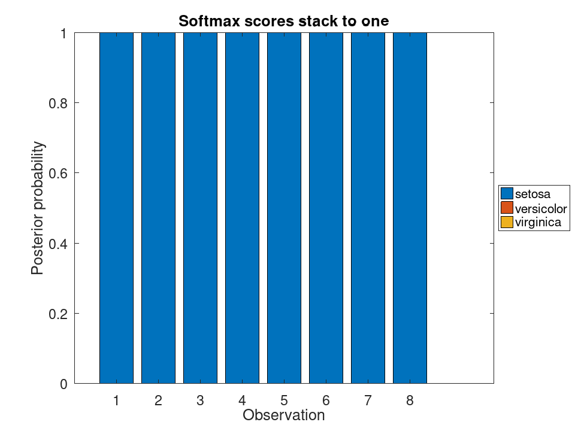
load fisheriris X = meas(:,3:4); mdl = fitcnet (X, species, 'IterationLimit', 300);
Ask the model about a grid, and paint each point by its answer
[gx, gy] = meshgrid (linspace (0.5, 7.5, 120), linspace (0, 3, 120));
[~, ~, region] = unique (predict (mdl, [gx(:), gy(:)]));
contourf (gx, gy, reshape (region, size (gx)), [1 2 3]);
colormap (summer);
hold on;
gscatter (X(:,1), X(:,2), species, 'krb', 'ox+');
hold off;
xlabel ('Petal length');
ylabel ('Petal width');
title ('Regions the network assigns to each species');
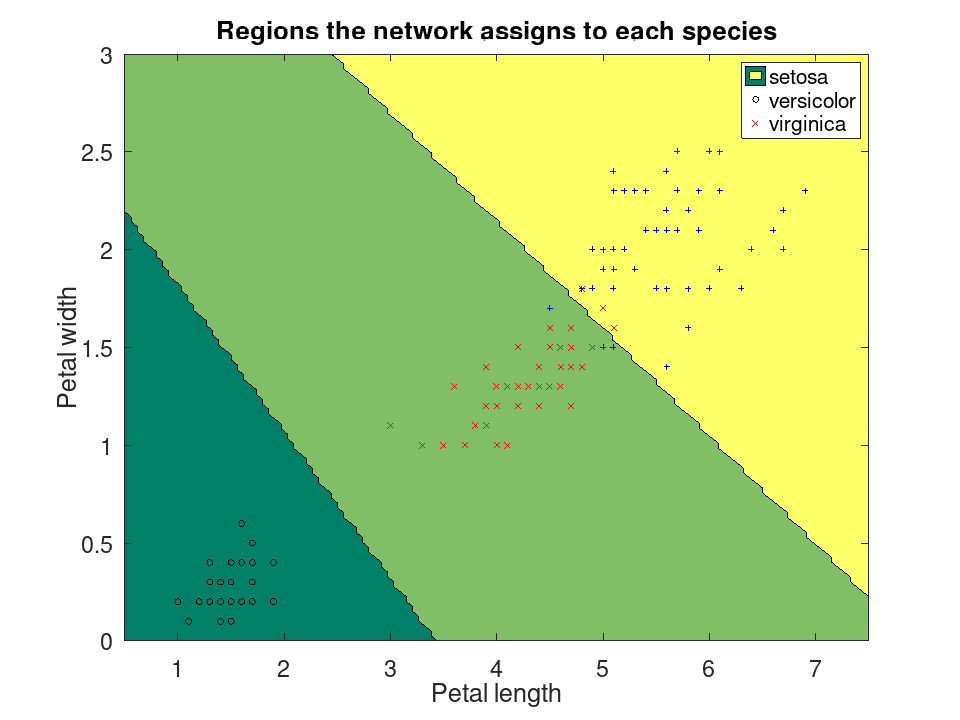
ClassificationNeuralNetwork: label = resubPredict (obj)
ClassificationNeuralNetwork: [label, score] = resubPredict (obj)
label = resubPredict (obj) returns the vector of
labels predicted for the corresponding instances in the training data,
using the predictor data in obj.X and corresponding labels,
obj.Y, stored in the neural network classification model,
obj.
ClassificationNeuralNetwork class object.
[label, score] = resubPredict (obj) also
returns score, which contains the predicted class scores or
posterior probabilities for each instance of the corresponding unique
classes.
See also: ClassificationNeuralNetwork, fitcnet
load fisheriris mdl = fitcnet (meas, species, 'IterationLimit', 200);
Same as calling predict with the training predictors
label = resubPredict (mdl); confusionchart (species, label, 'Title', 'Resubstitution confusion');
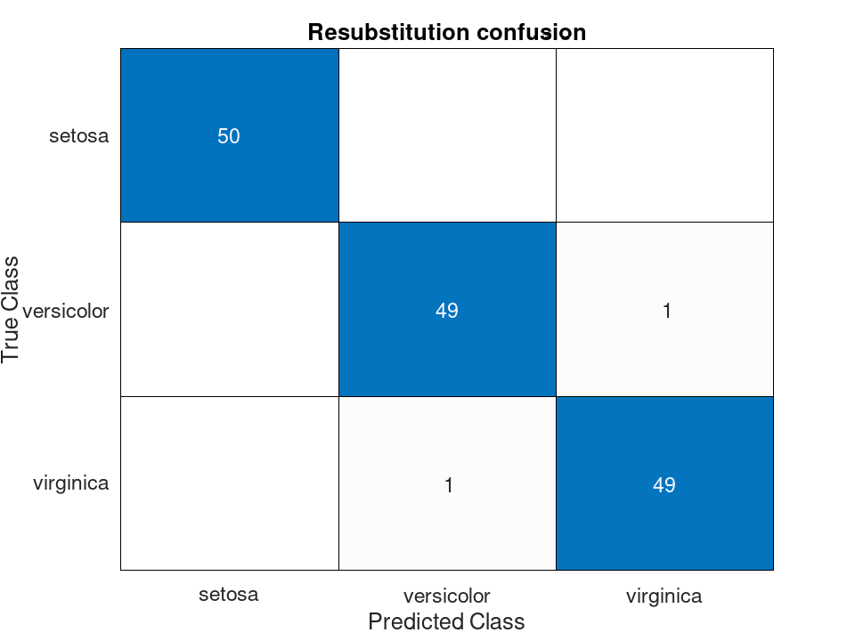
load fisheriris mdl = fitcnet (meas, species, 'IterationLimit', 200); [label, score] = resubPredict (mdl);
How sure the model is about the class it picked, for each row
hist (max (score, [], 2), 20);
xlabel ('Score of the chosen class');
ylabel ('Observations');
title ('Confidence of the resubstitution predictions');
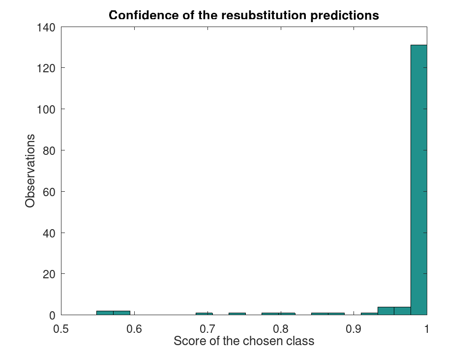
ClassificationNeuralNetwork: m = margin (obj, X, Y)
m = margin (obj, X, Y) returns a column
vector holding, for each row of X, the score the model gives its
true class in Y less the largest score it gives any other class.
A positive margin means the observation is classified correctly, and
the larger it is the more confidently so.
See also: ClassificationNeuralNetwork, edge, loss, predict
load fisheriris mdl = fitcnet (meas, species, 'IterationLimit', 150);
The score of the true class less the best score among the others
m = margin (mdl, meas, species);
table (min (m), median (m), max (m), 'VariableNames', ...
{'Smallest', 'Median', 'Largest'})
ans =
1x3 table
Smallest Median Largest
_________ ______ _______
-0.735257 1 1
load fisheriris mdl = fitcnet (meas, species, 'IterationLimit', 150); m = sort (margin (mdl, meas, species));
Sorting shows how much of the data the model is confident about, and how far below zero the mistakes fall
bar (m, 'facecolor', [0.3 0.5 0.8], 'edgecolor', 'none');
hold on;
plot ([1, numel(m)], [0, 0], 'r-', 'linewidth', 1.5);
hold off;
xlabel ('Observation, sorted by margin');
ylabel ('Margin');
title ('Margins below zero are the misclassified rows');
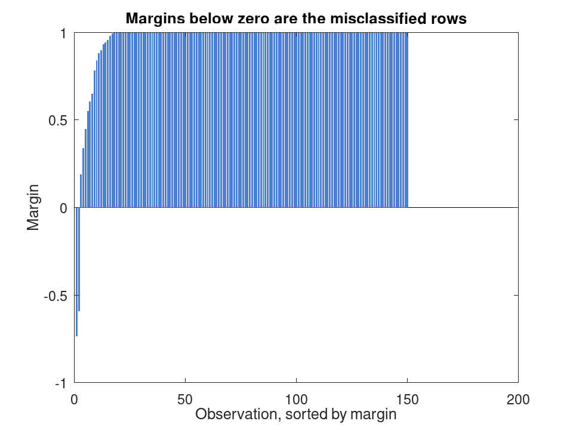
ClassificationNeuralNetwork: e = edge (obj, X, Y)
ClassificationNeuralNetwork: e = edge (…, "Weights", w)
e = edge (obj, X, Y) returns the mean of
the classification margins over the rows of X.
e = edge (…, takes the
weighted mean instead, w holding one weight per row of X.
The weights are normalised to sum to one before they are applied.
"Weights", w)
See also: ClassificationNeuralNetwork, margin, loss, predict
load fisheriris mdl = fitcnet (meas, species, 'IterationLimit', 150);
edge is the average of what margin returns
[edge(mdl, meas, species), mean(margin (mdl, meas, species))]
ans = 0.9508 0.9508
load fisheriris mdl = fitcnet (meas, species, 'IterationLimit', 150);
Weighting one species only gives the edge over that species alone. The weights are normalised before they are applied
classes = unique (species);
e = zeros (1, 3);
for k = 1:3
e(k) = edge (mdl, meas, species, 'Weights', strcmp (species, classes{k}));
endfor
error: ClassificationNeuralNetwork.edge: 'Weights' must be a numeric vector.
bar ([edge(mdl, meas, species), e]);
set (gca, 'xticklabel', {'all', classes{:}});
ylabel ('Edge');
title ('Edge overall and within each species');
ClassificationNeuralNetwork: L = loss (obj, X, Y)
ClassificationNeuralNetwork: L = loss (…, name, value)
L = loss (obj, X, Y) returns the
proportion of the rows of X the model misclassifies against the
true labels Y.
L = loss (…, name, value) accepts the
following name-value pairs:
"LossFun" selects the loss. Supported values are
"mincost", the default, "binodeviance",
"classifcost", "classiferror", "crossentropy",
"exponential", "hinge", "logit" and
"quadratic". "mincost" assigns each observation to
the class of least expected cost and charges what that assignment
costs, so it reads the scores as a posterior; "classifcost"
charges what the model’s own prediction costs. "crossentropy"
is defined for a network only. Note that the default differs from the
other classifiers in this package, which default to
"classiferror", and follows MATLAB’s for this class.
"Weights" holds one weight per row of X, normalised to
sum to one before it is applied.
See also: ClassificationNeuralNetwork, margin, edge, predict
load fisheriris mdl = fitcnet (meas, species, 'IterationLimit', 150);
classiferror counts mistakes; mincost, the default, charges what the least costly assignment costs given the true class
[loss(mdl, meas, species, 'LossFun', 'classiferror'), ... loss(mdl, meas, species)]
ans = 0.013333 0.013333
load fisheriris mdl = fitcnet (meas, species, 'IterationLimit', 150);
Every one is a function of the same margins, so they rank models alike but not on the same scale
names = {'classiferror', 'mincost', 'hinge', 'quadratic', ...
'binodeviance', 'logit', 'exponential'};
L = cellfun (@(f) loss (mdl, meas, species, 'LossFun', f), names);
barh (L, 'facecolor', [0.4 0.6 0.4], 'edgecolor', 'none');
set (gca, 'yticklabel', names);
xlabel ('Loss');
title ('The same fit under each loss function');
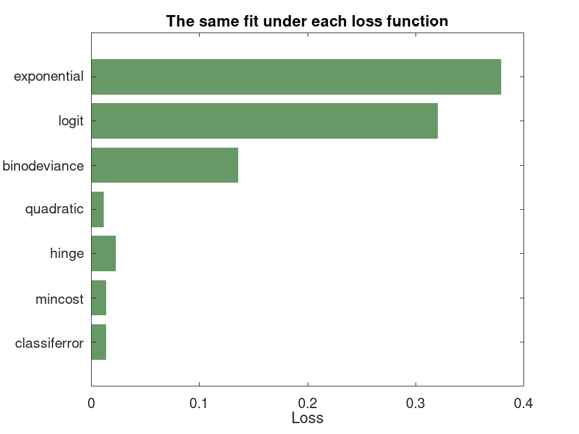
load fisheriris
iters = [5, 10, 25, 50, 100, 200, 400];
L = zeros (size (iters));
for k = 1:numel (iters)
mdl = fitcnet (meas, species, 'IterationLimit', iters(k));
L(k) = loss (mdl, meas, species, 'LossFun', 'classiferror');
endfor
semilogx (iters, L, 'o-', 'linewidth', 1.5);
xlabel ('Iteration limit');
ylabel ('Misclassification rate');
title ('Training longer buys accuracy, up to a point');
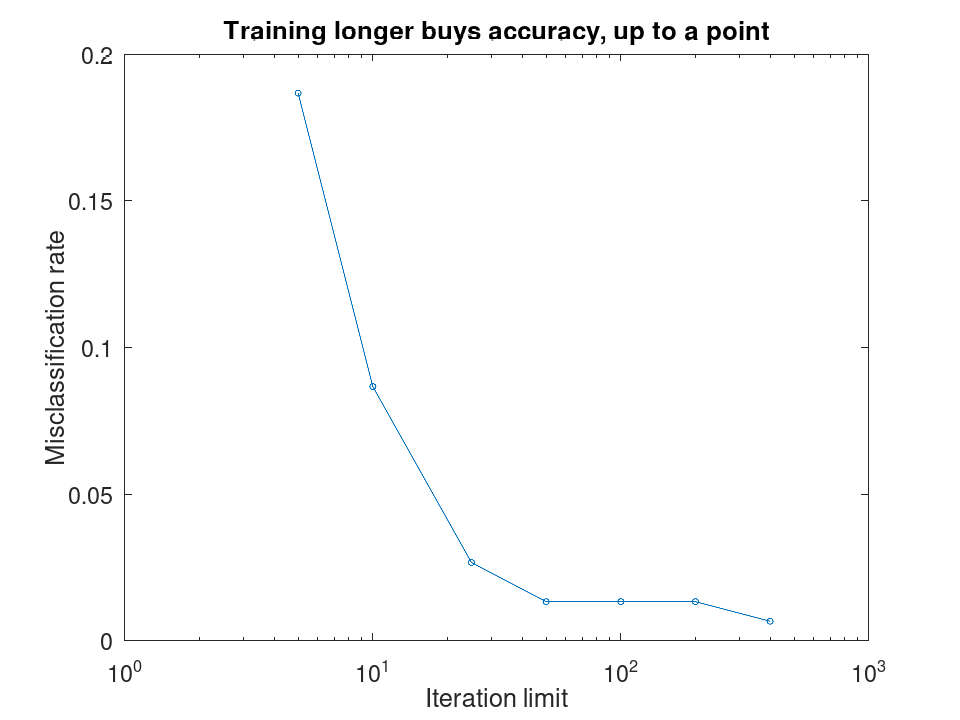
ClassificationNeuralNetwork: m = resubMargin (obj)
m = resubMargin (obj) is margin applied to
the observations the model was fitted on.
See also: ClassificationNeuralNetwork, margin
load fisheriris mdl = fitcnet (meas, species, 'IterationLimit', 200);
Same as margin called with the training predictors and labels
m = resubMargin (mdl);
table (sum (m > 0), sum (m <= 0), 'VariableNames', {'Correct', 'Wrong'})
ans =
1x2 table
Correct Wrong
_______ _____
148 2
load fisheriris mdl = fitcnet (meas, species, 'IterationLimit', 200); m = resubMargin (mdl);
One species separates cleanly; the other two share a boundary, and that is where the small margins are
boxplot (m, species);
ylabel ('Margin');
title ('Resubstitution margin by species');
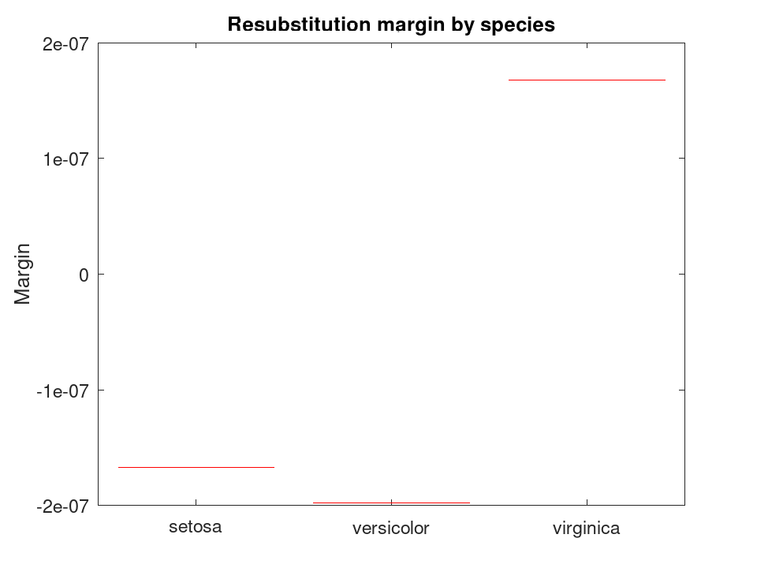
ClassificationNeuralNetwork: e = resubEdge (obj)
e = resubEdge (obj) is edge applied to the
observations the model was fitted on, weighted by obj.W.
See also: ClassificationNeuralNetwork, edge
load fisheriris mdl = fitcnet (meas, species, 'IterationLimit', 200);
resubEdge is the weighted mean of what resubMargin returns
[resubEdge(mdl), mean(resubMargin (mdl))]
ans = 0.9663 0.9663
load fisheriris
iters = [5, 10, 25, 50, 100, 200, 400];
e = zeros (size (iters));
for k = 1:numel (iters)
e(k) = resubEdge (fitcnet (meas, species, 'IterationLimit', iters(k)));
endfor
semilogx (iters, e, 'o-', 'linewidth', 1.5);
xlabel ('Iteration limit');
ylabel ('Resubstitution edge');
title ('Confidence rises with training');
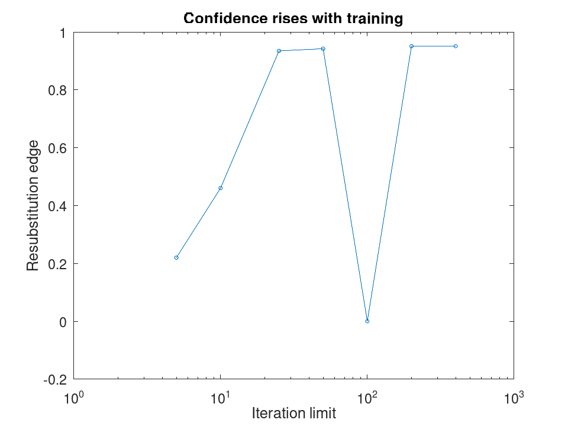
ClassificationNeuralNetwork: L = resubLoss (obj)
ClassificationNeuralNetwork: L = resubLoss (…, name, value)
L = resubLoss (obj) is loss applied to the
observations the model was fitted on, weighted by obj.W. It
takes the same "LossFun" name-value pair.
See also: ClassificationNeuralNetwork, loss
load fisheriris mdl = fitcnet (meas, species, 'IterationLimit', 200);
resubLoss is loss over the rows the model was fitted on, weighted by the observation weights the model carries
[resubLoss(mdl), loss(mdl, meas, species, 'Weights', mdl.W)]
ans = 0.013333 0.013333
load fisheriris mdl = fitcnet (meas, species, 'IterationLimit', 300); cv = crossval (mdl, 'KFold', 5);
The gap between the two is what the model gained by seeing the answers
bar ([resubLoss(mdl, 'LossFun', 'classiferror'), ...
kfoldLoss(cv, 'LossFun', 'classiferror')]);
set (gca, 'xticklabel', {'resubstitution', '5-fold'});
ylabel ('Misclassification rate');
title ('Training error against cross-validated error');
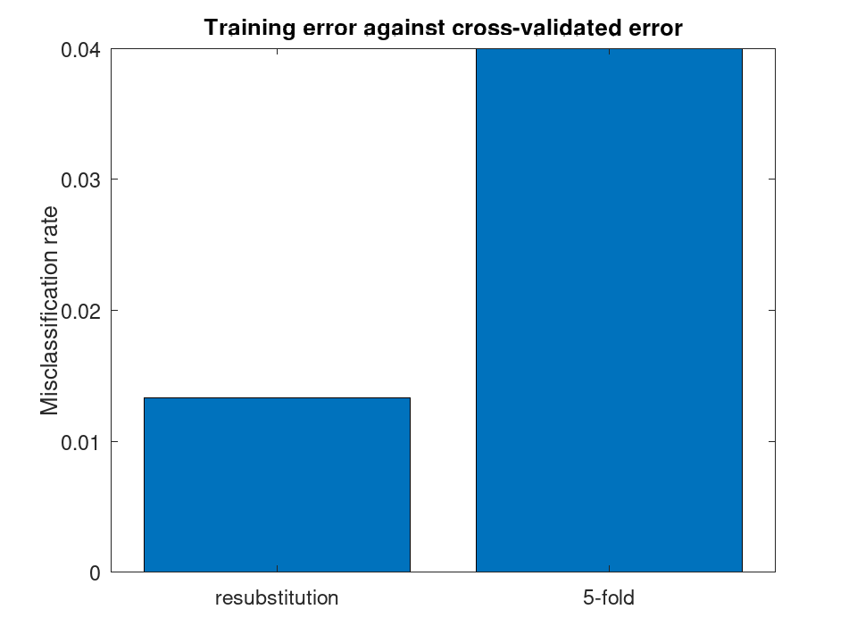
ClassificationNeuralNetwork: CVMdl = crossval (obj)
ClassificationNeuralNetwork: CVMdl = crossval (…, Name, Value)
CVMdl = crossval (obj) returns a cross-validated model
object, CVMdl, from a trained model, obj, using 10-fold
cross-validation by default.
CVMdl = crossval (obj, name, value)
specifies additional name-value pair arguments to customize the
cross-validation process.
| Name | Value |
|---|---|
'KFold' | Specify the number of folds to use in
k-fold cross-validation. "KFold", k, where k is an
integer greater than 1. |
'Holdout' | Specify the fraction of the data to
hold out for testing. "Holdout", p, where p is a
scalar in the range . |
'Leaveout' | Specify whether to perform
leave-one-out cross-validation. "Leaveout", Value, where
Value is ’on’ or ’off’. |
'CVPartition' | Specify a cvpartition
object used for cross-validation. "CVPartition", cv, where
isa (cv, "cvpartition") = 1. |
See also: fitcnet, ClassificationNeuralNetwork, cvpartition, ClassificationPartitionedModel
load fisheriris mdl = fitcnet (meas, species, 'IterationLimit', 200);
Each fold holds out a fifth of the data and refits on the rest
cv = crossval (mdl, 'KFold', 5)
cv =
ClassificationPartitionedModel
CrossValidatedModel: 'NeuralNetwork'
ResponseName: 'Y'
ClassNames: {'setosa' 'versicolor' 'virginica'}
NumObservations: 150
KFold: 5
ScoreTransform: 'none'
load fisheriris mdl = fitcnet (meas, species, 'IterationLimit', 200); cv = crossval (mdl, 'KFold', 5);
Spread across the folds says how much the estimate itself can be trusted; a wide spread means five folds were not enough
L = zeros (1, 5);
for k = 1:5
L(k) = kfoldLoss (cv, 'Folds', k, 'LossFun', 'classiferror');
endfor
bar (L, 'facecolor', [0.6 0.4 0.6], 'edgecolor', 'none');
hold on;
plot ([0.5, 5.5], [1, 1] * mean (L), 'r-', 'linewidth', 1.5);
hold off;
xlabel ('Fold');
ylabel ('Misclassification rate');
title ('Held-out error of each fold, and their mean');
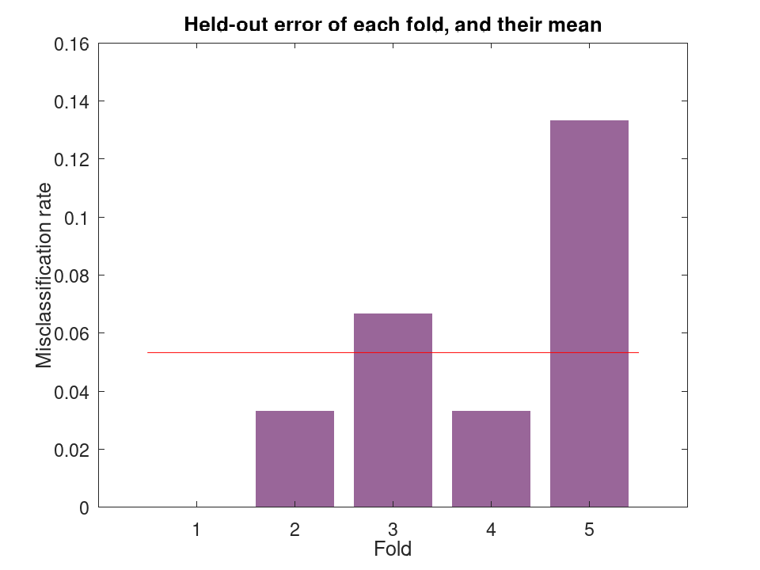
load fisheriris keep = [1:15, 51:65, 101:115]; mdl = fitcnet (meas(keep,:), species(keep), 'IterationLimit', 100);
Leaveout fits as many models as there are observations, so it is the most expensive choice and the least biased
cv = crossval (mdl, 'Leaveout', 'on'); kfoldLoss (cv, 'LossFun', 'classiferror')
ans = 0.044444
ClassificationNeuralNetwork: CVMdl = compact (obj)
CVMdl = compact (obj) creates a compact version of the
ClassificationNeuralNetwork object, obj.
See also: fitcnet, ClassificationNeuralNetwork, CompactClassificationNeuralNetwork
load fisheriris mdl = fitcnet (meas, species, 'IterationLimit', 200);
The compact model keeps what it needs to predict and nothing else
cmdl = compact (mdl)
cmdl =
CompactClassificationNeuralNetwork
ResponseName: 'Y'
ClassNames: {'setosa' 'versicolor' 'virginica'}
ScoreTransform: 'none'
NumPredictors: 4
LayerSizes: [10]
Activations: 'relu'
OutputLayerActivation: 'softmax'
load fisheriris mdl = fitcnet (meas, species, 'IterationLimit', 200); cmdl = compact (mdl);
Same weights, so the same answers
xc = [min(meas); mean(meas); max(meas)]; isequal (predict (mdl, xc), predict (cmdl, xc))
ans = 1
ClassificationNeuralNetwork: savemodel (obj, filename)
savemodel (obj, filename) saves each property of a
ClassificationNeuralNetwork object into an Octave binary file, the name
of which is specified in filename, along with an extra variable,
which defines the type classification object these variables constitute.
Use
loadmodel in order to load a classification object into Octave’s
workspace.
See also: loadmodel, fitcnet, ClassificationNeuralNetwork